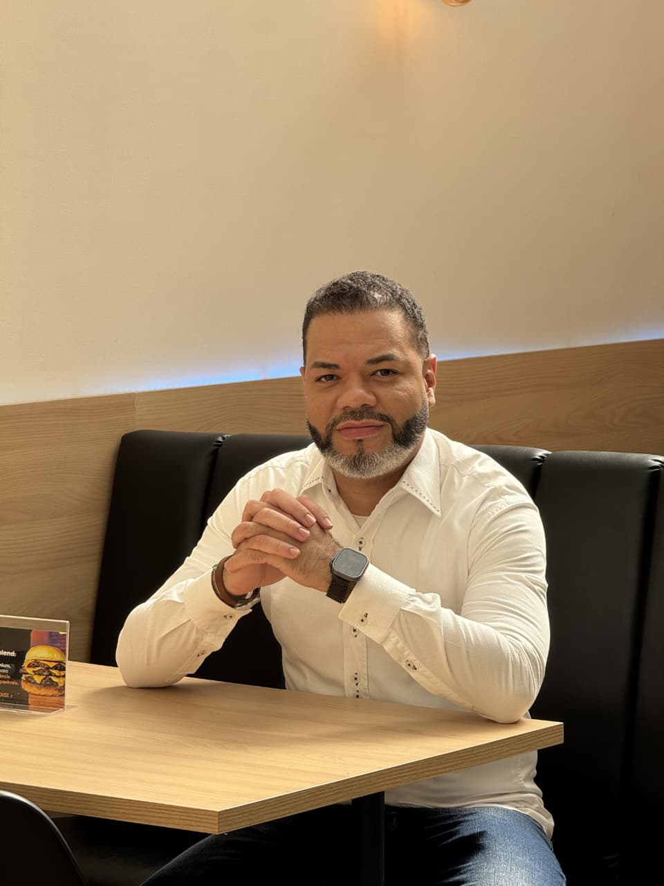

O início no condomínio
Entre intervalos da rotina corporativa, os primeiros pedidos saíam de uma cozinha improvisada. Estrutura simples e uma regra inegociável: fazer direito desde o primeiro burger.
Nosso salão em São Caetano, reservas e Welcome Drink.
Vitrine em vídeo dos nossos cortes, burgers, sobremesas e shakes.
Eventos empresariais, reuniões e confraternizações.
Origem, método na chapa e compromisso ambiental.
Da cozinha de um condomínio ao salão na Rua Amazonas, em São Caetano do Sul: seis anos de rigor na chapa, comida feita do zero e hospitalidade sem atalhos.
A Brat nasceu para elevar o hambúrguer artesanal ao patamar da alta hospitalidade. Sem blends baratos, sem conservantes ou aditivos artificiais e sem atalhos — só cortes selecionados, técnica e respeito real por quem senta à nossa mesa.
100% peito bovino e alcatra. Sem restos, sem corantes e com tudo preparado do zero.
Da água ao drink autoral, tudo vai em taça de cristal. Toda visita merece peso de ocasião especial.
Selagem, textura e temperatura calibradas à exaustão antes de qualquer receita entrar no menu.
"Brat" significa irmãos.
O nome nasceu das nossas raízes familiares em 2020 e permanece como código de honra da casa: só vai para a sua mesa o que servimos para a nossa própria família.
Toque nos marcadores ▶ para assistir aos vídeos reais de cada criação sem sair desta página.
Entre intervalos da rotina corporativa, os primeiros pedidos saíam de uma cozinha improvisada. Estrutura simples e uma regra inegociável: fazer direito desde o primeiro burger.
No Parque São Lucas, nasce nossa primeira operação física e o DNA de testar até acertar o ponto exato — berço do nosso e das nossas receitas autorais de alcatra.
Lançamos o Cartão VIP, o programa de pontos e fomos pioneiros na região com entregas em bikes elétricas. Os dados reais de quem mais voltava apontaram o próximo passo natural: São Caetano do Sul.
Seis meses de obra deram vida ao nosso salão na Rua Amazonas, 1652, inaugurado com 60 cartões VIP, jardins e luz acolhedora. Nesse mesmo ciclo, fomos escolhidos pelo público no Melhores do Ano 2024/2025 em votação popular na web.
Expandimos o menu com o , peixes, massas, sem corantes artificiais e coquetelaria autoral como o em taças de cristal — fechando o ano escolhidos novamente pelo público no Melhores do Ano 2025/2026.
Sistemas digitais desenvolvidos dentro de casa, rotina de insumos frescos e uma operação madura para consolidar a Brat como referência gastronômica na região.
Está na energia que prepara o seu prato, na forma como entregamos e no verde que devolvemos ao bairro.
Plantio real em parceria com o Instituto Refloresta, convertendo parte do movimento da casa em recuperação de área verde.
Nossos jardins externos e o jardim vertical interno refrescam naturalmente o salão e ajudam a deixar a Rua Amazonas mais viva.
Equipamentos de cocção operando com energia renovável e pioneirismo com entregas em bikes elétricas desde 2023.

Brat Burger & Steakhouse • Ardor Gestão
Mais de 15 anos liderando grandes operações, atendimento e controle de processos — bagagem hoje dedicada integralmente à cozinha, à hospitalidade e à consistência diária da Brat.
Um restaurante consistente não nasce do acaso. Na Brat, unimos vivência em grandes operações, tecnologia própria e técnica culinária para entregar o mesmo padrão numa quarta tranquila ou num sábado de casa cheia — funcionando também como o laboratório vivo da Ardor Gestão.
Processos claros e formação em Marketing voltados para uma experiência sem ruídos, da reserva à sobremesa.
Base em Tecnologia e sistemas próprios criados em casa para ouvir o cliente de verdade e evoluir a operação com fatos.
Formação em Gastronomia aplicada diretamente à escolha dos cortes, ao ponto na chapa e ao equilíbrio de cada receita autoral.
"Nada aqui nasceu em planilha de gabinete. Tudo o que chega à sua mesa foi testado, calibrado e vivido no calor real da nossa própria chapa."
Crescer com a consistência das grandes casas sem jamais abrir mão da cozinha feita do zero e do cuidado de receber cada convidado como família.